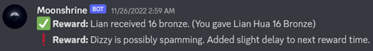

- Innovatie: persoonlijk project
Discord-bot voor communicatie met communitygameserver
-

November 2022

Online

Ong. 5-7 dagen
-
NodeJS
DiscordJS
SQLite
RCON
Unreal Engine
-
In de maand November van 2022 heb ik, als lid en organiserend medewerker van een online vriendencommunity, vrijwillig gewerkt aan een persoonlijke project waarvoor een Discord-bot gemaakt moest worden om een bepaald probleem op te lossen.
Binnen deze groep, vooral de groep van organisatorische medewerkers binnen deze community, werd er vooraf al vaker gesproken over de onmogelijkheid om digitaal te connecteren met de gameserver, en dan meer specifiek de game die deze community daarop host, om zo bepaalde data te bekijken of gamecommando’s uit te voeren. Heel wat games, waaronder bijvoorbeeld ook Minecraft, hebben hiervoor al een ingebouwd RCON-protocol, gebaseerd op het Valve Source RCON Protocol, maar hiervoor bestaan niet altijd geschikte clients aangezien die vaak afhankelijk van de specifieke game anders functioneren.
Voorheen gebruikte deze communitymedewerkers zelfgevonden tools die via erg omslachtige methodes in bepaalde gevallen wel werkten, maar niet een op maat gemaakte oplossing waren voor de specifieke “use case” van deze community. In het geval van deze community was er de nood om een client te hebben die erg makkelijk te gebruiken is, op maat gemaakt is voor de Unreal Engine game Conan Exiles en ook over een bepaald niveau van automatisatie beschikt betreffende het gebruik van de client en mogelijke interactie in de game tussen deze bot, de game en de spelers op de communityserver.
Met deze eisen in het achterhoofd werd er besloten om Discord, een online communicatieplatform, te gebruiken als basis voor deze client, niet enkel omdat het met de nodige programmatie aan alle eisen kan voldoen maar ook omdat deze community al een eigen Discord-server heeft wat de integratie ervan dus ook erg eenvoudig zou maken. Daarnaast kunnen Discord-bots gehost worden op Virtual Private Servers, of in de cloud, waardoor het een geschikte oplossing is voor een bot die altijd beschikbaar is. Discord-bots kunnen tevens ook gemaakt worden met NodeJS en DiscordJS.
Als enig individu met technische kennis binnen dit team was dit dus ook een persoonlijk project dat ik zelfstandig heb onderzocht en gemaakt. Hiervoor is er gebruik gemaakt van de documentatie van het Valve Source RCON Protocol om deze technologie beter te begrijpen en hoe daarop ingehaakt kan worden via NodeJS. Gelukkig zijn er op de npm-website verscheidene packages te vinden die gebruikt kunnen worden voor RCON-communicatie. Voor het ontwikkelen van deze applicatie zijn verschillende van deze packages getest geweest aangezien deze niet allemaal werkten met de RCON-implementatie binnen de Unreal Engine-game Conan Exiles van het bedrijf Funcom. Dit probleem leek te liggen aan de responsetypes van deze RCON-implementatie.
Eenmaal dat probleem was opgelost was de verdere ontwikkeling van de Discord-bot vanzelfsprekend. De gebruikte RCON-package maakte het mogelijk om een directe communicatie richting de gameserver te maken en daarbij data door te sturen en ook terug te krijgen.
Via deze implementatie, zoals afgebeeld in Figuur 5, is het mogelijk voor gebruikers met een Discord-account die deel uitmaken van de juiste Discord-server en beschikken over de juiste rechten binnen die Discord-server om commando’s door te sturen naar de gameserver waarvan de RCON-poort en het IP-adres worden meegegeven via environmentvariabelen. Eenmaal de gameserver dit commando heeft verwerkt geeft deze een response terug. Deze response wordt dan weergegeven als een bericht in het desbetreffende Discord-kanaal.
Naast het maken van een algemene RCON-communicatiemethode via Discord werd er, zoals eerder aangehaald, door het team ook gevraagd om aan automatisatie te werken. Een voorbeeld hiervan is een “player engagement system”, een beloningssysteem waarbij spelers beloond worden om bepaalde activiteiten uit te voeren in de game, bijvoorbeeld het uitvoeren van bepaalde chatinteracties in het spel. De game, gemaakt door Funcom, biedt geen mogelijkheid om dit binnen het spel om een makkelijk aanpasbare en variabele methode te doen, dus werd er besloten om ook dit deel via de Discord-bot te laten functioneren. Gelukkig werden er doorheen de jaren door andere leden van de gamecommunity andere tools gemaakt die “webhook”-berichten naar Discord sturen bij het uitvoeren van bepaalde acties in het spel.
Door de Discord-bot deze “webhook”-berichten te laten lezen en parsen werd het mogelijk om bepaalde acties binnen de game te filteren. Eenmaal een speler één van de desbetreffende acties uitvoert in het spel zal de Discord-bot dit kunnen detecteren waarna het dan, via de eerder gemaakte RCON-implementatie, vanuit Discord een beloning kan uitgeven naar de speler in het spel. Hierdoor werd er ook voldaan aan de eis voor automatische interactie tussen de speler, de server en de bot. Daarnaast heeft de Discord-bot ook de mogelijkheid om mogelijk misbruik van dit beloningssysteem, via bijvoorbeeld spammethodes, te detecteren en hierop in te grijpen. De Discord-bot schrijft per uitgegeven beloning en per uitgegeven waarschuwing ook een logbericht weg in Discord.
Om de automatisatie van dit project af te ronden, en de Discord-bot continu te laten functioneren, is er een Virtual Private Server in de cloud gehuurd waarop deze NodeJS-gebaseerde Discord-bot draait.
Het eindresultaat is een Discord-bot dat permanent op een Virtual Private Server draait en zowel een RCON-communicatiemethode met de gameserver vormt voor de communitymedewerkers als een niveau van automatisering implementeert betreffende interacties van de speler met de gameserver en de bot. Terwijl de geschreven code zeker verbeteringen kan ondergaan betreffende het dynamisch opstellen van de toegepaste context, waar op dit moment bijvoorbeeld de kanaal-ID’s van Discord nog “hardcoded” in de applicatie staan, is het gemaakte resultaat toch meer dan voldoende binnen de gebruikte context. Aangezien de kans dat deze Discord-bot buiten de desbetreffende community gebruikt gaat worden vrijwel nihil is, is de nood op het dynamisch programmeren van deze gegevens er ook niet binnen deze scope. Uiteraard zijn gevoelige gegevens zoals serveradressen, de RCON-poort en het RCON-wachtwoord wel als variabele gegevens geprogrammeerd in de applicatie.
Reflecterend op dit project ben ik erg tevreden met de verrichte werken en het verkregen resultaat. Net zoals veel van de andere vrijwillige werken die ik online verricht voor vrienden en community’s waar ik deel van uitmaak gaf ook dit project een sterk gevoel van voldoening bij het afronden ervan. Het zijn projecten zoals deze die voor mij ook de sterke zekerheid geven dat ik graag naar een vorm van “purpose” zoek binnen het werk dat ik doe, zowel in mijn vrijetijd als op professioneel niveau. Als ik via mijn werk iemand kan helpen of ik er een algemeen belang in zie, dan werkt dit als een erg motiverende factor die mij in de hoogste versnelling doet doorwerken, vaak dag en nacht.
Daarnaast heb ik voor via dit project de kans gehad om met veel verschillende mensen samen te werken, niet zozeer op technisch niveau maar wel op gebruikersniveau. Het heeft me geleerd een beter proces te handhaven voor het begrijpen van de noden van de eindgebruiker en hier beter op in te spelen. In plaats van assumpties te maken over hoe de gebruiker graag iets wilt zien werken ben ik, door dit project, meer open geworden in mijn vorm van communiceren. Ik heb nu sneller de intentie om bij de gebruiker te gaan horen wat de exacte wensen zijn.
Tevens heb ik ook met verschillende technologieën leren werken die ik daarvoor nog niet heel erg veel heb gebruikt. Programmeren mag dan wel geen deel uitmaken van mijn afstudeerrichting bij Hogeschool PXL, toch hecht ik er een persoonlijk belang aan om ook deze skills te onderhouden en te cultiveren. De wereld van IT bestaat uit veel verschillende onderdelen, maar dat betekent niet dat die allemaal afgezonderd en apart moeten functioneren. Voor iedereen binnen de IT-wereld is het naar mijn mening van belang om een groot niveau van globale kennis te hebben, zelfs buiten de eigen specialisatie.
Dit project heeft me ook de kans gegeven om met DiscordJS en Discord-bots te werken, iets dat ik vooraf enkel heb gedaan via “webhooks” maar niet via een zelfgemaakte bot.
Tijdens het ontwikkelen van deze applicatie heb ik mijn internationale grenzen kunnen verleggen, niet enkel door te werken voor internationale gebruikers maar ook door in de Funcom-community, waar tal van verschillende ontwikkelaars aanwezig zijn, vragen te kunnen stellen en mijn eigen kennis en vondsten ook kenbaar te maken aan hen.
Met voldoende tijd en middelen is het mijn doel om dit project verder uit te breiden en ontwikkelen zodat het in gebruik gesteld kan worden door meerdere gamecommunity’s. Hiervoor zou ik de architectuur van de Discord-bot wel anders moeten aanpakken en hiervoor een grotere infrastructuur moeten voorzien. Daarvoor heb ik op het moment nog niet de middelen.
Richting mijn verdere carrière en mogelijke toekomstige persoonlijke projecten zal ik zeker deze aangeleerde technische skills bijhouden, maar hecht ik daarnaast ook belang aan mijn ervaring die ik heb kunnen opdoen door met deze internationale eindgebruikers en ontwikkelaars samen te werken. Als er iets is dat ik echt graag doe, dan is het dat wel. Via deze online platformen zijn er werkelijk geen limieten betreffende internationaal samenwerken.
Het is mijn doel om in de toekomst nog meer gelijkaardige vrijwillige projecten op te nemen, zeker wanneer deze een algemeen belang vormen voor de desbetreffende eindgebruikers. Als ik iemand kan helpen op technisch niveau, dan doe ik dat graag ongeacht de nieuwe technische skills ik daarvoor moet bijleren. Persoonlijk zie ik dat als een onderdeel van mijn ongelimiteerde nieuwsgierigheid die daarbovenop gemotiveerd wordt door het kunnen helpen van mensen waar ik graag mee samen werk.